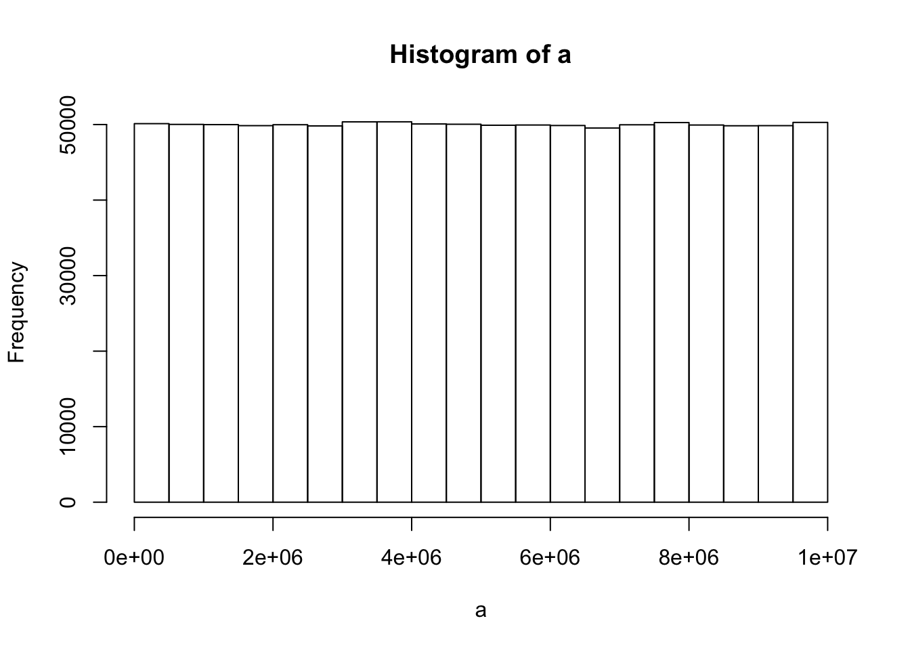

Do simple math with numbers, addition, subtraction, multiplication, division
1+1## [1] 23-2## [1] 14*6## [1] 245/7## [1] 0.7142857Put numbers into variables, do simple math on the variables
troy <- 1
abc <- 389
a <- 1
b <- 2
c <- 3
a+c## [1] 4b-troy+c## [1] 4Write code that will place the numbers 1 to 100 separately into a variable using for loop. Then, again using the seq function.
a <- length(100)
for (i in 1:100) { #: makes a sequence between numbers
a[i] <-i
}
print (a)## [1] 1 2 3 4 5 6 7 8 9 10 11 12 13 14 15 16 17
## [18] 18 19 20 21 22 23 24 25 26 27 28 29 30 31 32 33 34
## [35] 35 36 37 38 39 40 41 42 43 44 45 46 47 48 49 50 51
## [52] 52 53 54 55 56 57 58 59 60 61 62 63 64 65 66 67 68
## [69] 69 70 71 72 73 74 75 76 77 78 79 80 81 82 83 84 85
## [86] 86 87 88 89 90 91 92 93 94 95 96 97 98 99 100Find the sum of all the integer numbers from 1 to 100.
sum(1:100)## [1] 5050Write a function to find the sum of all integers between any two values.
a <- 5
b <- 10
sum(a:b)## [1] 45List all of the odd numbers from 1 to 100.
a <- length (1:99)
for (i in 1:99) {
if (!i %% 2){
next
}
print(i) #id like to print in rows
} #!=not equal to i, %%=divided by## [1] 1
## [1] 3
## [1] 5
## [1] 7
## [1] 9
## [1] 11
## [1] 13
## [1] 15
## [1] 17
## [1] 19
## [1] 21
## [1] 23
## [1] 25
## [1] 27
## [1] 29
## [1] 31
## [1] 33
## [1] 35
## [1] 37
## [1] 39
## [1] 41
## [1] 43
## [1] 45
## [1] 47
## [1] 49
## [1] 51
## [1] 53
## [1] 55
## [1] 57
## [1] 59
## [1] 61
## [1] 63
## [1] 65
## [1] 67
## [1] 69
## [1] 71
## [1] 73
## [1] 75
## [1] 77
## [1] 79
## [1] 81
## [1] 83
## [1] 85
## [1] 87
## [1] 89
## [1] 91
## [1] 93
## [1] 95
## [1] 97
## [1] 99a <- 1:100
a[ a%%2 != 0]## [1] 1 3 5 7 9 11 13 15 17 19 21 23 25 27 29 31 33 35 37 39 41 43 45
## [24] 47 49 51 53 55 57 59 61 63 65 67 69 71 73 75 77 79 81 83 85 87 89 91
## [47] 93 95 97 99List all of the prime numbers from 1 to 1000.
a <- length (1:1000)
for (i in 1:1000) {
if (!i %% 1)
next
#id like to print in rows
} #!=not equal to i, %%=divided by
print(i)## [1] 1000Generate 100 random numbers
a <- (1:200)
round(a, digits = 0) # not sure how to limit to 100 numbers## [1] 1 2 3 4 5 6 7 8 9 10 11 12 13 14 15 16 17
## [18] 18 19 20 21 22 23 24 25 26 27 28 29 30 31 32 33 34
## [35] 35 36 37 38 39 40 41 42 43 44 45 46 47 48 49 50 51
## [52] 52 53 54 55 56 57 58 59 60 61 62 63 64 65 66 67 68
## [69] 69 70 71 72 73 74 75 76 77 78 79 80 81 82 83 84 85
## [86] 86 87 88 89 90 91 92 93 94 95 96 97 98 99 100 101 102
## [103] 103 104 105 106 107 108 109 110 111 112 113 114 115 116 117 118 119
## [120] 120 121 122 123 124 125 126 127 128 129 130 131 132 133 134 135 136
## [137] 137 138 139 140 141 142 143 144 145 146 147 148 149 150 151 152 153
## [154] 154 155 156 157 158 159 160 161 162 163 164 165 166 167 168 169 170
## [171] 171 172 173 174 175 176 177 178 179 180 181 182 183 184 185 186 187
## [188] 188 189 190 191 192 193 194 195 196 197 198 199 200sample(1:200,200)## [1] 115 24 10 31 37 107 182 154 51 195 171 79 92 176 119 164 47
## [18] 174 151 38 76 167 139 200 125 63 197 12 95 60 121 155 142 36
## [35] 162 61 190 94 87 65 117 6 4 105 66 136 75 40 130 199 186
## [52] 70 8 44 9 13 157 102 89 29 165 147 188 30 98 152 52 78
## [69] 72 124 177 140 15 194 122 163 143 146 55 100 181 45 84 123 191
## [86] 113 196 35 39 189 101 114 28 175 88 23 160 110 96 64 3 183
## [103] 112 193 126 53 118 90 83 62 134 41 192 141 86 46 108 149 26
## [120] 50 135 148 33 1 103 18 198 106 185 144 150 111 166 93 49 42
## [137] 11 74 173 104 2 14 128 184 82 129 145 19 7 97 21 91 58
## [154] 80 153 43 16 99 132 71 5 34 180 25 159 133 17 127 169 22
## [171] 69 170 137 27 81 131 20 54 178 48 120 73 168 109 68 77 116
## [188] 179 172 187 158 156 161 138 67 59 85 32 56 571:200## [1] 1 2 3 4 5 6 7 8 9 10 11 12 13 14 15 16 17
## [18] 18 19 20 21 22 23 24 25 26 27 28 29 30 31 32 33 34
## [35] 35 36 37 38 39 40 41 42 43 44 45 46 47 48 49 50 51
## [52] 52 53 54 55 56 57 58 59 60 61 62 63 64 65 66 67 68
## [69] 69 70 71 72 73 74 75 76 77 78 79 80 81 82 83 84 85
## [86] 86 87 88 89 90 91 92 93 94 95 96 97 98 99 100 101 102
## [103] 103 104 105 106 107 108 109 110 111 112 113 114 115 116 117 118 119
## [120] 120 121 122 123 124 125 126 127 128 129 130 131 132 133 134 135 136
## [137] 137 138 139 140 141 142 143 144 145 146 147 148 149 150 151 152 153
## [154] 154 155 156 157 158 159 160 161 162 163 164 165 166 167 168 169 170
## [171] 171 172 173 174 175 176 177 178 179 180 181 182 183 184 185 186 187
## [188] 188 189 190 191 192 193 194 195 196 197 198 199 200Generate 100 random numbers within a specific range
round(runif(50, min = 100, max = 500))## [1] 496 283 306 398 484 205 465 248 258 471 112 417 314 319 469 385 172
## [18] 327 183 201 194 161 474 311 332 338 429 299 428 163 387 270 276 178
## [35] 174 379 248 306 422 478 491 105 210 407 109 351 462 312 418 269Write your own functions to give descriptive statistics for a vector variable storing multiple numbers. Write functions for the following without using R intrinsics: mean, mode, median, range, standard deviation
some_numbers <- c(3, 4, 7, 6, 5, 1, 4, 3, 4, 4, 5, 4, 0, 3, 5, 4, 4, 4) #c()=dataset
mean(some_numbers) #finding mean## [1] 3.888889median(some_numbers) #median## [1] 4range(some_numbers) #range## [1] 0 7sd(some_numbers) #standarddeviation## [1] 1.604732y <- table(some_numbers)#finding mode
y## some_numbers
## 0 1 3 4 5 6 7
## 1 1 3 8 3 1 1names(y)[which(y==max(y))]## [1] "4"Count the number of characters in a string variable
q <- "dogs cats" #strsplit helps find letters in string
strsplit(q,split="") #to split a character vector## [[1]]
## [1] "d" "o" "g" "s" " " "c" "a" "t" "s"t <-strsplit(q,split ="")
t[[1]]## [1] "d" "o" "g" "s" " " "c" "a" "t" "s"t[[1]][2]#use to access second item in string## [1] "o"t[[1]][6]#use to access sixth item in string## [1] "c"table(t)## t
## a c d g o s t
## 1 1 1 1 1 1 2 1Count the number of words in a string variable
a <- "counting words in a string"
strsplit(a,split=" ") ## [[1]]
## [1] "counting" "words" "in" "a" "string"t <-strsplit(a,split ="") #not sure how to count the words instead of individual characters
table(t)## t
## a c d g i n o r s t u w
## 4 1 1 1 2 3 4 2 2 2 2 1 1Count the number of sentences in a string variable
a <- "coding is hard. but i like the challenge. cats. dogs"
b <- strsplit(a,split="[.]") #[.] sperates the sentences
length(b)## [1] 1length(b[[1]]) #the amount of sentences in the vector ## [1] 4length(a[[1]])## [1] 1a <- c(2,5,3,4,5,7,5,4,3,3,5,6,8,9,0,7,4,3,2,3,5,8,6,4)
table(a) ## a
## 0 2 3 4 5 6 7 8 9
## 1 2 5 4 5 2 2 2 1Do a logical test to see if one word is found within the text of another string variable.
test_word <- "hi" #"" is one thing
test_sentence <- "hi my name is troy"
unlist(strsplit(test_sentence, split = " ")) #flattens into a vector## [1] "hi" "my" "name" "is" "troy"f <- test_word #put string into variable
g <- test_sentence
a <- strsplit(test_sentence, split = " ")
b <- unlist(strsplit(test_sentence, split = " ")) #what does this mean
b[1]## [1] "hi"a[[1]][1]#the first thing in the fist thing## [1] "hi"test_word%in%f #because test word became variable instead of string we can now see if it is in f## [1] TRUEf%in%a## [1] FALSEf <- c(1,2,3,4,5,6)
d <- 2
e <- 7
d%in%f## [1] TRUEe%in%f## [1] FALSE##Problem 16
Put the current computer time in milliseconds into a variable
print(as.numeric(Sys.time())*1000, digits=15)Measure how long a piece of code takes to run by measuring the time before the code is run, and after the code is run, and taking the difference to find the total time
print(as.numeric(Sys.time())*10, digits=15)## [1] 15583825815.753Read a .txt file or .csv file into a variable
Output the contents of a variable to a .txt file -write.csv()-
Create a variable that stores a 20x20 matrix of random numbers
a <- matrix(1:500, ncol=20,nrow=20)
View(a)Output any matrix to a txt file using commas or tabs to separate column values, and new lines to separate row values
#HARDER PROBLEMS
The FizzBuzz Problem. List the numbers from 1 to 100 with the following constraints. If the number can be divided by three evenly, then print Fizz instead of the number. If the number can be divided by five evenly, then print Buzz instead of the number. Finally, if the number can be divided by three and five evenly, then print FizzBuzz instead of the number. The answer could look something like this:
for (i in 1:100) {
if (i %% 3 == 0 & i %% 5 == 0) {print("FizzBuzz")} #when used with curlys it will print keep in mind
else if (i %% 3 == 0) {print("Fizz")}
else if (i %% 5 == 0) {print("Buzz")}
else print(i)
}## [1] 1
## [1] 2
## [1] "Fizz"
## [1] 4
## [1] "Buzz"
## [1] "Fizz"
## [1] 7
## [1] 8
## [1] "Fizz"
## [1] "Buzz"
## [1] 11
## [1] "Fizz"
## [1] 13
## [1] 14
## [1] "FizzBuzz"
## [1] 16
## [1] 17
## [1] "Fizz"
## [1] 19
## [1] "Buzz"
## [1] "Fizz"
## [1] 22
## [1] 23
## [1] "Fizz"
## [1] "Buzz"
## [1] 26
## [1] "Fizz"
## [1] 28
## [1] 29
## [1] "FizzBuzz"
## [1] 31
## [1] 32
## [1] "Fizz"
## [1] 34
## [1] "Buzz"
## [1] "Fizz"
## [1] 37
## [1] 38
## [1] "Fizz"
## [1] "Buzz"
## [1] 41
## [1] "Fizz"
## [1] 43
## [1] 44
## [1] "FizzBuzz"
## [1] 46
## [1] 47
## [1] "Fizz"
## [1] 49
## [1] "Buzz"
## [1] "Fizz"
## [1] 52
## [1] 53
## [1] "Fizz"
## [1] "Buzz"
## [1] 56
## [1] "Fizz"
## [1] 58
## [1] 59
## [1] "FizzBuzz"
## [1] 61
## [1] 62
## [1] "Fizz"
## [1] 64
## [1] "Buzz"
## [1] "Fizz"
## [1] 67
## [1] 68
## [1] "Fizz"
## [1] "Buzz"
## [1] 71
## [1] "Fizz"
## [1] 73
## [1] 74
## [1] "FizzBuzz"
## [1] 76
## [1] 77
## [1] "Fizz"
## [1] 79
## [1] "Buzz"
## [1] "Fizz"
## [1] 82
## [1] 83
## [1] "Fizz"
## [1] "Buzz"
## [1] 86
## [1] "Fizz"
## [1] 88
## [1] 89
## [1] "FizzBuzz"
## [1] 91
## [1] 92
## [1] "Fizz"
## [1] 94
## [1] "Buzz"
## [1] "Fizz"
## [1] 97
## [1] 98
## [1] "Fizz"
## [1] "Buzz"Take text as input, and be able to produce a table that shows the counts for each character in the text. This problem is related to the earlier easy problem asking you to count the number of times that a single letter appears in a text. The slightly harder problem is the more general version: count the frequencies of all unique characters in a text
k<-"the follow is text is written to count the individual letters"
table(unlist(strsplit(k,split="")))##
## a c d e f h i l n o r s t u v w x
## 10 1 1 2 6 1 2 6 4 3 4 2 3 10 2 1 2 1numbers <- c(1,6,4,2,3,4,5,5)
letters <- c("e","a","b","e","a","b","a","b")
new_df <- data.frame(numbers,letters)
print(new_df)## numbers letters
## 1 1 e
## 2 6 a
## 3 4 b
## 4 2 e
## 5 3 a
## 6 4 b
## 7 5 a
## 8 5 b###Test the random number generator for a flat distribution. Generate a few million random numbers between 0 and 100. Count the number of 0s, 1s, 2s, 3s, etc. all the way up to 100. Look at the counts for each of the numbers and determine if they are relatively equal. For example, you could plot the counts in Excel to make a histogram. If all of the bars are close to being flat, then each number had an equal chance of being selected, and the random number generator is working without bias.
a<-runif(1000000,0,10000000)
hist(a)
###Generate a matrix for a multiplication table. For example, the labels for the columns could be the numbers 1 to 10, and the labels for the rows could be the numbers 1 to 10. The contents of each of the cells in the matrix should be correct answer for multiplying the column value by the row value.
#i cant for the life of me figure this problem out.....:(
times_table <- matrix(0, ncol=10,nrow=10)
for(i in 1:10){
for(j in 1:10){
times_table[i,j] <- i*j
}
}
times_table## [,1] [,2] [,3] [,4] [,5] [,6] [,7] [,8] [,9] [,10]
## [1,] 1 2 3 4 5 6 7 8 9 10
## [2,] 2 4 6 8 10 12 14 16 18 20
## [3,] 3 6 9 12 15 18 21 24 27 30
## [4,] 4 8 12 16 20 24 28 32 36 40
## [5,] 5 10 15 20 25 30 35 40 45 50
## [6,] 6 12 18 24 30 36 42 48 54 60
## [7,] 7 14 21 28 35 42 49 56 63 70
## [8,] 8 16 24 32 40 48 56 64 72 80
## [9,] 9 18 27 36 45 54 63 72 81 90
## [10,] 10 20 30 40 50 60 70 80 90 100#two loops, one for rows and one for columns##Problem 5 ###Encrypt and Decrypt the Alphabet Turn any normal english text into an encrypted version of the text, and be able to turn any decrypted text back into normal english text. A simple encryption would be to scramble the alphabet such that each letter corresponds to a new randomly chosen (but unique) letter.
paste("1_", letters, sep = "")## [1] "1_e" "1_a" "1_b" "1_e" "1_a" "1_b" "1_a" "1_b"##Problem 6 ###Your task here is to write an algorithm that can simulate playing the above depicted Snakes and Ladders board. You should assume that each roll of the dice produces a random number between 1 and 6. After you are able to simulate one played game, you will then write a loop to simulate 1000 games, and estimate the average number of dice rolls needed to successfully complete the game.